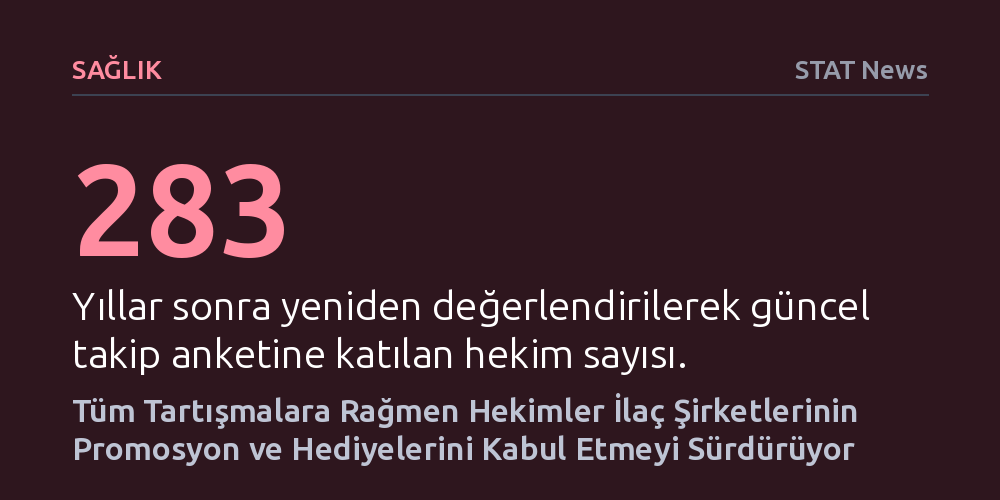

SAGLIK · STAT News · 2026-09-11
Yıllar süren etik tartışmalara karşın hekimlerin ilaç şirketlerinden gelen ücretsiz yemek, numune ve hediyeleri kabul etme alışkanlığı sürüyor. Yeni bir takip araştırması, sektör temsilcileriyle kurulan bu temasların hekim davranışlarında uzun vadeli ve kalıcı olduğunu gösteriyor.
Hekimlerin tedavi tercihlerinin yalnızca bilimsel kanıtlara dayandığı varsayımını sorgulatarak ilaç firmalarıyla kurulan maddi bağların mesleki bağımsızlık üzerindeki kalıcı etkisini gözler önüne seriyor.

İlaç üreticileri uzun yıllardır hekimlere ücretsiz yemekler, ilaç numuneleri, çeşitli hediyeler ve konuşmacı ücretleri sunmaktadır. Sağlık sektöründe yaygın bir pazarlama pratiğine dönüşen bu ikramlar, tıp dünyası ile ilaç şirketleri arasındaki en tartışmalı ilişki alanlarından birini oluşturmaktadır. Hekimlere sağlanan bu tür maddi olanakların ve jestlerin, tarafsız karar verme yetisini gölgeleyerek reçete yazma alışkanlıklarını yönlendirebileceği endişesi tıp etiğinin başlıca gündem maddelerindendir.
Sektör içindeki etik kuralların sıkılaştırılmasına ve konunun kamuoyunda yoğun biçimde tartışılmasına rağmen, hekimlerin bu temaslara bakışının zaman içinde nasıl bir değişim geçirdiği belirsizliğini koruyordu. Zira uygulamadaki kısıtlamalara karşın ilaç mümessilleri ile hekimler arasındaki yüz yüze temas ve hediye kabulü, tıp pratiğinin olağan bir parçası gibi sürdürülmeye devam etmektedir.
Hekimler ile ilaç temsilcileri arasındaki etkileşimin zaman içerisindeki seyrini anlamak amacıyla araştırmacılar kapsamlı bir takip çalışması yürüttü. Çalışma kapsamında, 2011 yılında henüz tıp öğrencisi ya da asistan hekimken ankete katılmış olan 1.300'den fazla kişinin arasından 283 hekime ulaşılarak iki yıl önce güncel bir anket uygulandı.
Elde edilen ilk bulgular ve karşılaştırmalı veriler, tıp eğitimi sürecinde başlayan bu tür etkileşimlerin kariyerin ilerleyen yıllarında da hekimlerin davranışlarında derin izler bıraktığını ortaya koyuyor. Hekimlerin uzmanlıklarını aldıklarında dahi endüstri ile ilişkilerini kesmek yerine, sağlanan promosyonları ve temsilci ziyaretlerini kabullenme eğilimini sürdürdükleri görülüyor.
İlaç şirketlerinin sunduğu cömert olanakların hekimlerin reçete alışkanlıklarını taraflı biçimde etkilemesi, sağlık hizmetinin maliyeti ve kalitesi açısından doğrudan bir tehdit oluşturmaktadır. Küçük bir yemek ya da numune desteği dahi, hekim ile firma arasında örtük bir minnet bağı kurarak hastaya en uygun ilacın değil, en çok tanıtılan ilacın reçete edilmesine zemin hazırlayabilmektedir.
Yapılan yeni analiz, konunun tıp dünyasında neden bu kadar derin bir anlaşmazlık alanı olarak kalmaya devam edeceğini açıklıyor. İlaç sektörü temsilcileri hekimlerle kurulan diyaloğu bilimsel bilgilendirme olarak savunurken, bağımsız sağlık otoriteleri çıkar çatışmalarının hasta sağlığını ikincil plana itme riskine dikkat çekmektedir.